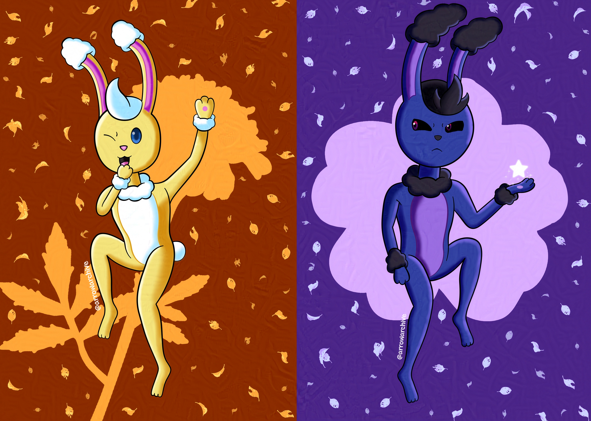

Morning Marigolds, Midnight Magnolias
“Each flower has a meaning, but you determine its significance”
This applies to the sky rabbits– marigolds bloom in the morning, and magnolias bloom at night. The time they are born determines their appearance, but how they are treated determines who they become.
Lore aside, this piece was an experiment with shadows and lighting. The Fill-in Mono Pen on CSP made quick work of coloring, so I focused more on shading, details, and effects for the end result. I think it turned out well, but I need to practice shading more so I can make better drawings in the future!